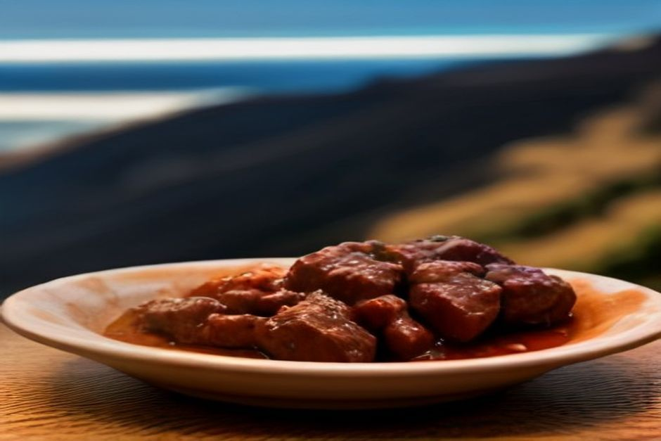
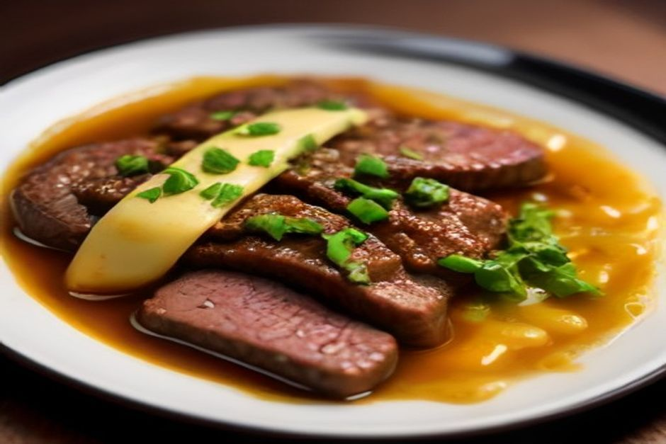

Sie haben auf Madeira schon Espetada gegessen oder wollen es noch tun, und auf der Karte steht plötzlich „Picado“? Das ist das Gericht, das Einheimische gern zuerst auf den Tisch stellen: kleine Rindfleischwürfel in Knoblauchsauce, aus einer gemeinsamen Pfanne gegessen. Hier lesen Sie, was Picado ist, wie es sich von Espetada unterscheidet und wie Sie es bestellen, ohne zu viel oder zu wenig zu nehmen.
Was ist Picado? Die Kurzfassung
Picado (auf Madeira oft auch „Picado de vaca“ genannt, also vom Rind) ist gewürfeltes Rindfleisch, meist aus der Hüfte oder vom Roastbeef. Es wird in einer sehr heißen Pfanne mit viel Knoblauch, Lorbeer, etwas Chili und einem Schuss Weißwein gebraten. Kurz vor dem Servieren kommt ein Spritzer Zitrone dazu.
Der Name erklärt sich von selbst: picado heißt auf Portugiesisch „klein geschnitten“. Gemeint ist das Fleisch, und zwar bewusst kleiner als bei jedem Spieß.
Auf den Tisch kommt es noch zischend, in der Pfanne oder auf einer heißen Platte. Dazu gibt es gewürfelte Bratkartoffeln und Zahnstocher, mit denen jeder die Stücke direkt aus der Pfanne aufspießt. Besteck brauchen Sie nicht.

Picado oder Espetada: Was bestelle ich?
Die meisten Gäste kennen Espetada, den langen Rindfleischspieß am Lorbeerstock, der über Holzkohle gegrillt und über dem Teller aufgehängt serviert wird. Das ist ein Hauptgericht, meist mit bolo do caco und Pommes.
Picado ist etwas anderes, und der Vergleich hilft bei der Bestellung:
- Zubereitung: Espetada kommt vom offenen Feuer, Picado aus der Pfanne.
- Größe der Stücke: Bei Picado sind die Würfel deutlich kleiner.
- Sauce: Espetada ist trocken gegrillt, Picado schwimmt in einer dunklen Knoblauch-Wein-Sauce.
- Essen: Espetada isst jeder für sich mit Messer und Gabel. Picado teilt man mit Zahnstochern aus einer Pfanne.
- Rolle auf der Karte: Espetada ist das Essen, um das man den Abend plant. Picado ist ein Petisco, also eine Kleinigkeit zum Teilen, und landet oft zusammen mit der ersten Poncha auf dem Tisch.
Wer mit zwei oder drei Personen unterwegs ist, kann Picado auch als ganzes Abendessen nehmen. Größere Gruppen bestellen es als Auftakt und danach Espetada.
Was steckt in einem Teller Picado?
Die Zutatenliste ist kurz: Rindfleisch, reichlich Knoblauch, Lorbeer, frischer oder getrockneter Chili, Salz und Wein. Meist ist es Weißwein, gelegentlich auch Madeirawein. Der Wein kocht zu einer dunklen Sauce ein, und die ist der eigentliche Grund, warum man Picado bestellt.
Manche Küchen geben am Ende etwas Butter für Glanz dazu oder gießen den Bratensatz über die Kartoffelwürfel.
Ist Picado scharf? Nein, nicht von sich aus. Der Chili in der Pfanne sorgt für eine leise Wärme im Hintergrund. Die Schärfe bestimmen Sie selbst: Auf dem Tisch stehen gelber Senf und ein Schälchen Piri-Piri-Sauce. Meist liegt auch Brot bereit, um die Sauce aufzutunken, wenn das Fleisch weg ist. Für viele ist das der beste Moment des Gerichts.
Woher kommt das Gericht?
Picado stammt aus der Tasca-Kultur Madeiras: kleine, familiengeführte Lokale, vor allem in Câmara de Lobos und in den älteren Gassen von Funchal, in denen man bei einem Getränk sitzen bleibt, statt förmlich zu speisen.
Rindfleisch war auf der Insel immer knapp und geschätzt. Die steilen Terrassen eignen sich eher für Bananen, Zuckerrohr und Wein als für Weideland. Also schnitt man das Fleisch klein und streckte es mit Knoblauch, Wein und Kartoffeln. So reichte es weiter und blieb trotzdem etwas Besonderes. Espetada war das Festtagsessen, Picado das Essen für einen Abend an der Theke.
Wo isst man Picado auf Madeira am besten?
In Câmara de Lobos. Das Fischerdorf gilt als der Referenzort. Die kleinen Tascas am Hafen servieren Picado seit Generationen zusammen mit Poncha, und Stammgäste bestellen es oft, ohne die Karte zu öffnen.
In Funchal. Suchen Sie auf der Karte nicht bei den Hauptgerichten, sondern unter „Petiscos“ oder „para partilhar“ (zum Teilen). Am ehesten fündig werden Sie in den älteren Straßen rund um die Zona Velha, weniger in den Strandlokalen, die ganz auf Touristen ausgerichtet sind.
Jede Tasca hat ihr eigenes Verhältnis von Knoblauch zu Wein, und genau darin liegt der Unterschied zwischen einer guten und einer belanglosen Pfanne. Fragen Sie vor Ort nach, das bringt mehr als jede Online-Bewertung.
So bestellen und essen Sie Picado richtig
- Zum Teilen bestellen. Eine Pfanne für zwei oder drei Personen ist üblich. Dazu passen Poncha oder eine Karaffe Hauswein.
- Zahnstocher benutzen. Ein Fleischstück aufspießen, nach Belieben in Senf oder Piri-Piri tunken, dann einen Kartoffelwürfel hinterher.
- Nicht hetzen. Picado ist für Gespräche gemacht. Es kühlt allerdings schnell ab, und das Fleisch wird dann zäh. Essen Sie also zügig, solange die Pfanne noch heiß ist.
- Brot für den Schluss aufheben. Durch die restliche Knoblauch-Wein-Sauce gezogen, ist es der Teil, für den Einheimische das Gericht bestellen.
Einen festen Preis kann ich Ihnen nicht nennen, er unterscheidet sich von Lokal zu Lokal. Als Petisco ist es in der Regel günstiger als eine ganze Espetada, aber fragen Sie im Zweifel nach der Portionsgröße.

Picado und eine Bootstour verbinden
Câmara de Lobos, das Dorf mit den besten Picado-Tascas, liegt auf der Route unseres Day Trips. Die Tour startet an der Marina do Funchal, Ponton C, um 10:00 oder um 14:00 Uhr. Sie fahren in 2 Std. 30 Min. bis Ribeira Brava (500 EUR) oder in 3 Std. weiter bis Ponta do Sol (600 EUR). Unterwegs sehen Sie Câmara de Lobos und Cabo Girão vom Wasser aus, und in Fajã dos Padres gibt es einen Badestopp mit Paddleboards.
Die Preise gelten für das ganze Boot mit bis zu 5 Gästen, nicht pro Person. Essen und Getränke sind an Bord inklusive. So bringen Sie dieses langsame, gesellige Tempo einer Hafen-Tasca gleich mit aufs Wasser. Wer Picado am selben Tag im Dorf probieren möchte, plant den Tisch am besten für den Abend.
Alle Details finden Sie unter Erlebnisse, bei der Tagestour und in der privaten Sonnenuntergangsfahrt. Bis 24 Stunden vor Abfahrt können Sie kostenlos stornieren.
Picado zu Hause nachkochen
Das gelingt gut, denn Sie brauchen vor allem eine heiße Pfanne. Würfeln Sie Hüft- oder Roastbeefsteak in etwa 2 cm große Stücke und braten Sie es in Olivenöl scharf und kurz an, mit viel zerdrücktem Knoblauch, einem Lorbeerblatt und in Scheiben geschnittenem Chili. Löschen Sie mit einem kleinen Glas trockenem Weißwein ab, lassen Sie ihn eine Minute einkochen und geben Sie einen Spritzer Zitrone dazu.
Servieren Sie sofort, mit gebratenen oder gerösteten Kartoffelwürfeln, Senf und Piri-Piri. Das Rindfleisch gart in der Pfanne schnell nach, deshalb sollte es innerhalb von ein, zwei Minuten auf dem Tisch stehen.
Espetada ist das Gericht, um das man ein Essen plant. Picado ist das Gericht, das eines beginnt.
Wenn Sie nur eines von beiden probieren können: Nehmen Sie Picado. Es ist kleiner, knoblauchiger und meist der erste leere Teller auf dem Tisch. Mehr zu Anreise, Wetter und Planung finden Sie unter Praktische Infos, weitere Guides im Journal.